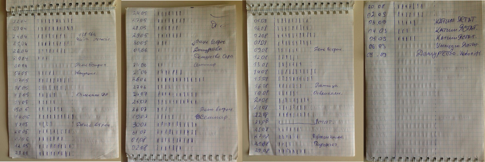

Pomodoro
Я давно знаком с техникой Pomodoro. Она выручает меня, если нужно сосредоточиться и сделать много работы. Я решил попробовать использовать эту технику более серьёзно и сделать на её основе аналитику. С момента этого решения прошло уже более двух лет. Расскажу про свой опыт работы с техникой Pomodoro.
Есть мнение, что в большой компании программисты могут работать примерно 4 часа. Согласен с этим мнением, выяснил опытным путём. Встречи, переходы между локациями переговорок, рабочая почта, обед, поток информации в чатах, переключения между задачами, коллеги которые хотят тебя отвлечь, просто отъедают часы. От этого всего не возможно избавиться, нужно это принять. Моё единственное желание – оставшееся время работать максимально продуктивно. И что ещё более важнее, быть уверенным, что я отработал на максимум, не сомневаться в себе ни на каплю.
Для тех кто хочет попробовать технику Pomodoro
У техники есть множество надстроек, каждый должен прийти к своему пониманию, что такое помидорка и как она будет работать на тебя. Для себя я понял, что моменты переключения когда я работаю, в основном работаю с редактором кода (сфокусирован на задаче), и время когда я думаю, или когда я могу себе позволить читать чатик, если понятно что делать.
Базовая техника
- Определяем задачу, которую нужно выполнить.
- Устанавливаем таймер на 25 минут.
- Работаем над задачей и избегаем любых отвлечений в эти 25 минут. Фокусируемся на задаче.
- По окончании 25 минут берём 5-минутный перерыв, даже если задача до конца не решена. После перерыва заводим Pomodoro снова на 25 минут.
- После четырёх 25-минутных рабочих отрезков, берём длительный перерыв в 15-30 минут.
Почему именно 25 минут? Такой промежуток времени:
- достаточно короткий, чтобы поддерживать дисциплину, противостоять отвлекающим воздействиям и не допускать «выгорание» от слишком долгой работы без отдыха, и
- достаточно длинный, чтобы получить реальное чувство прогресса в определённой задаче. Паузы по 5 минут помогают и мозгу отдохнуть, и переосмыслить то, что сделано за это время.
Правила Pomodoro которые работают для меня
Помидор неделим.
Если отвлёкся, или тебя отвлёк коллега помидор сбрасывается. Он не считается в статистике. Это мотивирует фокусироваться на задаче и не отвлекаться.
Короткий перерыв для того, что бы продумать, что будешь делать следующие 25 минут.
Это очень важное для меня правило. Даже навык. Очень важно переключить мозг с режима «печатной машинки» в режим «думать». Часто в эти 5 минут решается больше, чем в 25 минут в режиме «печатной машинки». Думать лучше стоя, или расхаживая по офису.
Долгий перерыв после 4 помидоров подряд.
Мозгу нужен отдых. Это подходящее время, для того что бы отвлечься, сходить на обед, переключиться, сменить деятельность.
Просто 25/5
Когда вдруг навалилось дел, одолела прокрастинация, нужно сосредоточиться без какого либо дальнейшего анализа. Просто завожу помидорку на 25 минут и работаю стараясь не отвлекаться. 5 минут между помидорками. Когда много понятной работы, эти 5 минут я трачу на план действий на следующие 25 минут. Смысл в том, что бы переключать себя из режима печатной машинки (25 минут), в режим принятия решений (5 минут). Мозг будет больше перегружаться если думать во время механической работы. Когда мозг перегружен он не работает на максимум. Так я устаю быстрее. Вообще не читаю никакую почту, не отвлекаюсь, думаю – потом работу работаю. Отдых от работы, просмотр почты и все остальное делаю во время большого перерыва, после 4 помидорок.
В методичке про Pomodoro говориться про последние 5 минут помидорки в которые нужно анализировать что было сделано, но я их пока не чувствую, по этому использую 5 минут в перерыве.
Если такой ритм не получается поддержать скорее всего тип задач не очень подходит. Помидорки по 25 минут очень сложно использовать когда нужно думать больше условных 5 минут или анализировать что-то масштабное. Лучше просто не забывать устраивать себе перекур например 10 минут раз в час. После 25 минут я просто завожу следующие 25 минут сразу, без перерыва. В таких случаях есть мнение, что 50 минут много, оптимально 40-45 минут. Прямо как школьный урок.
На самом деле, если нужно много думать, или что-то исследовать – скорее всего уже ничего не горит, вам повезло, есть время поработать головой.
Анализируем свой рабочий день с помощью Pomodoro
Когда простого поддержания рабочего ритма недостаточно и нужно понять – почему же я не укладываюсь по времени в мой первоначальный тайминг? Придётся потрудиться и начать записывать, что вообще происходит. В методичке есть достаточно понятные примеры как нужно производить анализ рабочего дня.
На деле техника очень гибкая и не должна один в один быть отработана по методичке. Как мне кажется там достаточно много «около ритуального», что конечно в долгосрочной перспективе даёт больше информации для анализа.
Мне хочется легко и быстро. В выводах методички так и написано, что каждый должен подобрать свой ритм и систему анализа.

Я делаю примерно так:
В начале дня завожу первую разогревочную помидорку, нужно накидать план дня. Смотрю в календарь, там у меня отражаются все встречи, прикидываю примерное количество доступных помидорок. Не забываю про время на обед и первую помидорку. Записываю в блокнот дату и число доступных помидорок. В среднем у меня это 9 помидорок (те самые примерно 4 часа). Потом смотрю на дашборд с задачами, и начинаю делать критичные задачи.
В современных условиях работы, обычно уже есть план на каждого человека в команде. По этому мне не нужно выделять время на планирование задач на текущий день. После завершения помидорки ставлю «галочку», или «палочку» на против сегодняшней даты. К концу дня смотрю достиг ли я установленной цели в количестве помидорок. Если не достиг целевого значения записываю комментарий, что повлияло на мой результат. Если достиг, то смело и с хорошим настроением иду домой, хорошо поработал.
Для большей мотивации если, хорошо поработал и достиг поставленной цели раньше, позволяю себе уйти домой, больше времени на отдых и переключение от работы.
Это самый простой способ анализа рабочего дня с техникой Pomodoro. Раньше я уделял время для анализа каждой отдельной задачей, составлял список работы на день. Сегодня такая детализация кажется излишней и я остановился на таком подходе.
Выводы сделаете сами. Мне помогло. Нравится, что инструмент простой и его можно подстроить под разные условия.
Ссылки
- Книга про технику Pomodoro. Прочитать можно всего за 4 помидорки.
- Притча о том, как техника Pomodoro спасла заядлого трудоголика
- Всё, что вам нужно знать о технике Pomodoro
- Tomighty. Самый простое и бесплатное приложение
- FocusList. Pomodoro с списком задач
- Tomato One. Приложение под Mac OS
- Pomodoro для CLI
- Forestapp. Pomodoro с геймификацией
- Телеграмм бот
- Pomotodo. Платный сервис с аналитикой
- Официальный сайт
- Wikipedia